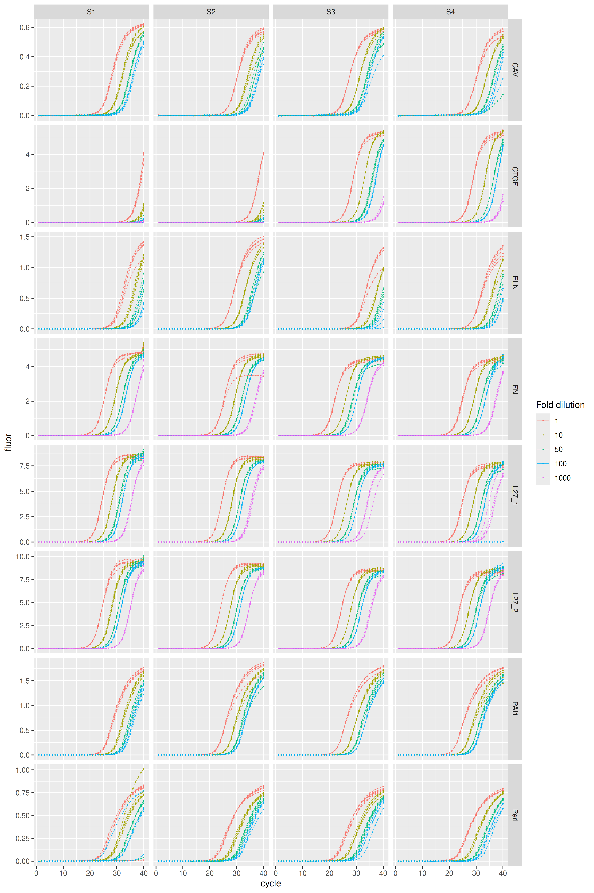

karlen provides real-time PCR data sets by Karlen et al. (2007) in tidy format.
Installation
install.packages("karlen")Data
The raw PCR amplification curve data by Karlen et al. (2007) is provided as one single eponymously named data set: karlen. In the original publication each data set pertaining one PCR plate is provided as a separate spreadsheet file. The column plate in karlen distinguishes each data set.
The karlen data set comprises quantitative real-time PCRs for four samples (S1 thru S4), for seven amplicons targeting seven genes: Cav1, Ctfg, Eln, Fn1, Rpl27, Hspg2, Serpine1.
For each sample/target combination a dilution series was performed. One PCR plate was used per amplicon, except for Rpl27 (L27) that was assayed twice (plates L27_1 and L27_2). The target column indicates the mouse gene symbol matching the targeted amplicon.
library(ggplot2)
library(dplyr, warn.conflicts = FALSE)
library(karlen)
karlen |>
dplyr::distinct(plate, target, sample, sample_type) |>
print(n = Inf)
#> # A tibble: 36 × 4
#> plate target sample sample_type
#> <fct> <fct> <fct> <fct>
#> 1 CAV Cav1 S1 std
#> 2 CAV Cav1 S2 std
#> 3 CAV Cav1 S3 std
#> 4 CAV Cav1 S4 std
#> 5 CAV Cav1 <NA> ntc
#> 6 CTGF Ctgf S1 std
#> 7 CTGF Ctgf S2 std
#> 8 CTGF Ctgf S3 std
#> 9 CTGF Ctgf S4 std
#> 10 ELN Eln S1 std
#> 11 ELN Eln S2 std
#> 12 ELN Eln S3 std
#> 13 ELN Eln S4 std
#> 14 ELN Eln <NA> ntc
#> 15 L27_1 Rpl27 S1 std
#> 16 L27_1 Rpl27 S2 std
#> 17 L27_1 Rpl27 S3 std
#> 18 L27_1 Rpl27 S4 std
#> 19 L27_2 Rpl27 S1 std
#> 20 L27_2 Rpl27 S2 std
#> 21 L27_2 Rpl27 S3 std
#> 22 L27_2 Rpl27 S4 std
#> 23 FN Fn1 S1 std
#> 24 FN Fn1 S2 std
#> 25 FN Fn1 S3 std
#> 26 FN Fn1 S4 std
#> 27 Perl Hspg2 S1 std
#> 28 Perl Hspg2 S2 std
#> 29 Perl Hspg2 S3 std
#> 30 Perl Hspg2 S4 std
#> 31 Perl Hspg2 <NA> ntc
#> 32 PAI1 Serpine1 S1 std
#> 33 PAI1 Serpine1 S2 std
#> 34 PAI1 Serpine1 S3 std
#> 35 PAI1 Serpine1 S4 std
#> 36 PAI1 Serpine1 <NA> ntcTwo dilution series schemes were assayed:
- Scheme 1 (Cav1, Eln, Hspg2, Serpine1): 1-fold, 10-fold, 50-fold, and 100-fold;
- Scheme 2 (Ctgf, Rpl27, Fn1): 1-fold, 10-fold, 50-fold, 100-fold and 1000-fold (two replicates only).
karlen |>
dplyr::filter(sample_type == "std") |>
dplyr::distinct(plate, target, dilution) |>
print(n = Inf)
#> # A tibble: 36 × 3
#> plate target dilution
#> <fct> <fct> <int>
#> 1 CAV Cav1 1
#> 2 CAV Cav1 10
#> 3 CAV Cav1 50
#> 4 CAV Cav1 100
#> 5 CTGF Ctgf 1
#> 6 CTGF Ctgf 10
#> 7 CTGF Ctgf 50
#> 8 CTGF Ctgf 100
#> 9 CTGF Ctgf 1000
#> 10 ELN Eln 1
#> 11 ELN Eln 10
#> 12 ELN Eln 50
#> 13 ELN Eln 100
#> 14 L27_1 Rpl27 1
#> 15 L27_1 Rpl27 10
#> 16 L27_1 Rpl27 50
#> 17 L27_1 Rpl27 100
#> 18 L27_1 Rpl27 1000
#> 19 L27_2 Rpl27 1
#> 20 L27_2 Rpl27 10
#> 21 L27_2 Rpl27 50
#> 22 L27_2 Rpl27 100
#> 23 L27_2 Rpl27 1000
#> 24 FN Fn1 1
#> 25 FN Fn1 10
#> 26 FN Fn1 50
#> 27 FN Fn1 100
#> 28 FN Fn1 1000
#> 29 Perl Hspg2 1
#> 30 Perl Hspg2 10
#> 31 Perl Hspg2 50
#> 32 Perl Hspg2 100
#> 33 PAI1 Serpine1 1
#> 34 PAI1 Serpine1 10
#> 35 PAI1 Serpine1 50
#> 36 PAI1 Serpine1 100Visualization of amplification curves (NTC curves are omitted):
karlen |>
dplyr::filter(sample_type != "ntc") |>
ggplot(aes(x = cycle, y = fluor, group = well, col = as.factor(dilution))) +
geom_line(linewidth = 0.1) +
geom_point(size = 0.05) +
facet_grid(rows = vars(plate), cols = vars(sample), scales = "free_y") +
labs(color = "Fold dilution")
References
Yann Karlen, Alan McNair, Sébastien Perseguers, Christian Mazza, and Nicolas Mermod. Statistical significance of quantitative PCR. BMC Bioinformatics 8, 131 (2007). doi: 10.1186/1471-2105-8-131.